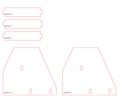

Set 2: Geçmeli Dayanak
Lazer kesim · Kesim 5 dk, montaj 10 dk · Ortaokul (kesimi yetişkin veya atölye yapar)
Yapıştırıcı veya vida kullanmadan, sadece geçmeli birleşimle toplanan telefon ve tablet dayanağı. İki yan plaka ve üç çubuktan oluşur; düz levhadan 3B ürüne dönüşümü gösterir.

Gerekenler
- Lazer kesim makinesi (veya CNC ruter) ve 3 mm MDF, kontrplak ya da akrilik
- Zımpara kâğıdı
- Lastik çekiç veya avuç içi
- Kumpas
Parça listesi
- 2 × yan plaka (plaka-A, plaka-B)
- 3 × çubuk (cubuk-1, 2, 3)
Yapım adımları
- Malzemeyi ölç. Levha kalınlığını kumpasla ölç. 3.0 mm değilse tools/make_sets.py içindeki T değerini değiştirip çizimi yeniden üret.
- Dosyayı aç. dayanak.dxf veya dayanak.svg dosyasını lazerin yazılımına aç. Birim: mm. Kırmızı çizgiler kesim çizgisidir.
- Deneme kesimi. Önce küçük bir artık parçada bir çubuk kes. Tırnağı bir yuvaya takıp sıkılığı dene.
- Tüm parçaları kes. 2 plaka ve 3 çubuk kes. Kenardaki is izini zımparayla al.
- Plakaları yatır. Plaka-A'yı düz masaya koy. Üç yuva yukarı baksın.
- Çubukları tak. Çubukların tırnaklarını yuvaya sırayla geçir: önce alt çubuklar, sonra arka çubuk. Gerekirse avucunla hafifçe bastır.
- Plaka-B'yi geçir. İkinci plakayı çubukların diğer uçlarına hizalayarak aşağı doğru bastır. Parçalar tam oturmalı.
- Kullan. Telefonu ya da tableti alt çubuğa oturtup arka çubuğa yasla.
Düşün ve dene
- Neden parçalar birbirini tutuyor: sürtünme mi, şekil mi?
- Levha kalınlığı 4 mm olsaydı hangi ölçüler değişirdi?
- Bu ürünü seri üretsek hangi adımı otomatikleştirirdin?
Sorun giderme
- Tırnaklar girmiyor: Yuva payı (K) çok küçük. K değerini 0.05 mm artır, yeniden kes.
- Birleşim gevşek: K değerini 0.05 mm azalt veya birleşimi bir damla ahşap tutkalıyla sabitle.
- Kenarlar yanık: Lazer hızını artır, gücü azalt veya kesimden önce maskeleme bandı yapıştır.
Dosyalar (açık kaynak, CC BY-SA 4.0)

Kaynak göstererek kullanın, değiştirin ve paylaşın: FRC 6429 4th Dimension.